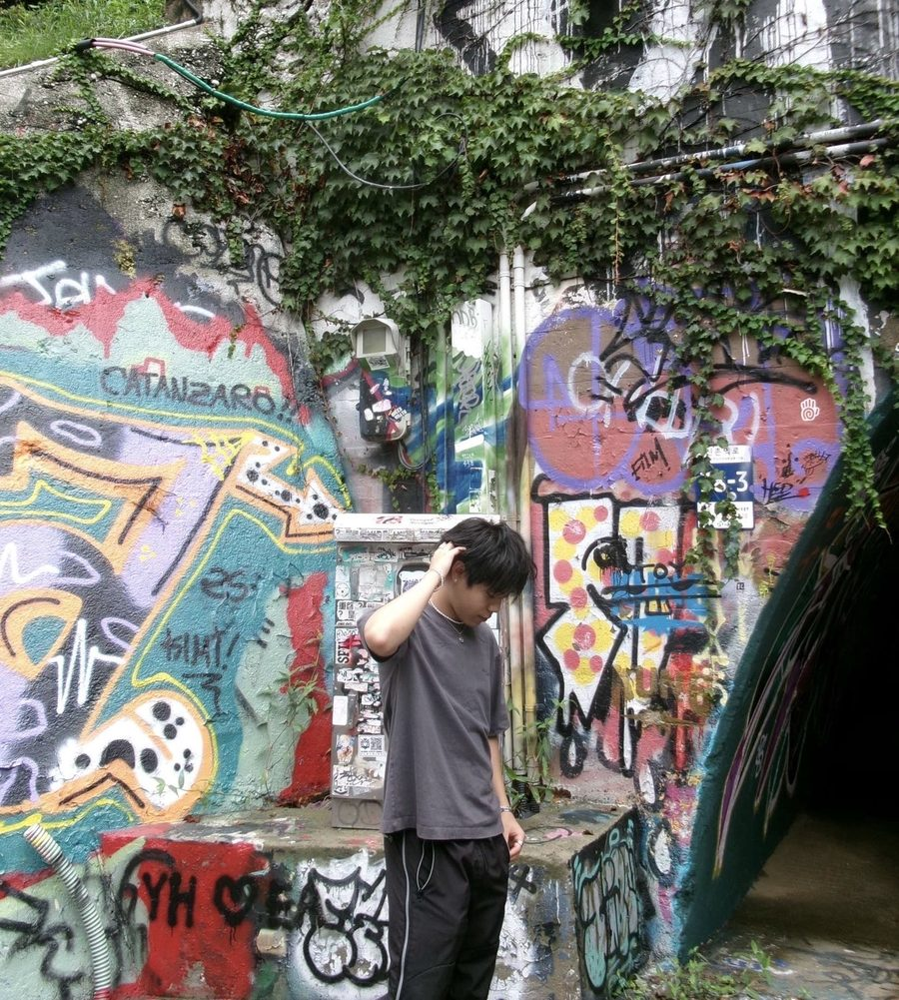

Justin Park.
I work across product, design, and technology
to turn ideas into things people can actually use.

My Work.
Nothing in this category yet.
I work across product, design, and technology
to turn ideas into things people can actually use.

Nothing in this category yet.